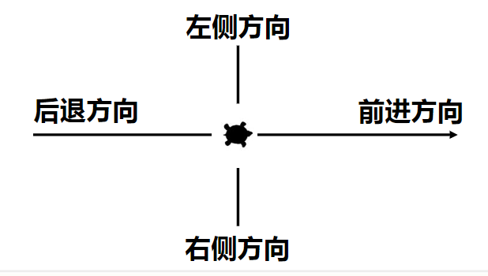
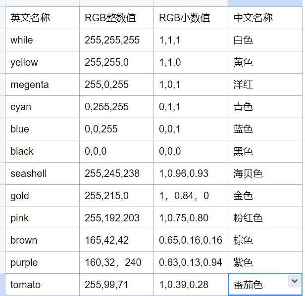

2.1turtle海龟绘图的使用
目标
1.了解海龟绘图的来源
2.掌握turtle库的基本方法
海龟绘图概述
海龟绘图很适合用来引导孩子学习编程。 最初来自于 Wally Feurzeig, Seymour Papert 和 Cynthia Solomon 于 1967 年所创造的 Logo 编程语言。
Python语言标准库之一
标准库：随解释器直接安装到操作系统中的功能模块
第三方：需要经过安装才能使用的功能模块
库Library、包package、模块Module，统称模块。
入门级的图形绘制函数库
海龟坐标体系
turtle空间坐标体系

RGB色彩体系

turtle 库基本方法
海龟动作
移动和绘制
| 方法 | 解释 | ||
|---|---|---|---|
| forward() \ | fd() | 前进 | |
| backward() \ | bk() \ | back() | 后退 |
| right（）\ | rt（） | 右转 | |
| left（）\ | lt（） | 左转 | |
| goto（）\ | setpostion() | 前往/定位 | |
| setx（） | 设置x坐标 | ||
| sety（） | 设置y坐标 | ||
| seth（） | 设置朝向 |
| home（） | 返回原点 |
|---|---|
| circle（） | 画圆 |
| dot（） | 画点 |
| stamp（） | 印章 |
| cleanstamp（） | 清除印章 |
| undo | 撤销 |
获取海龟状态
| position（）\ | pos（） | 位置 |
|---|---|---|
| towards() | 目标方向 | |
| xcor（） | x坐标 | |
| ycor（） | y坐标 | |
| heading（） | 朝向 | |
| distance（） | 距离 |
画笔控制
绘图状态
| pendown（） \ | pd（） \ | down（） | 画笔落下 |
|---|---|---|---|
| penup（）\ | pu（） \ | up() | 画笔抬起 |
| pensize（） \ | width（） | 画笔粗细 | |
| pen（） | 画笔 | ||
| isdown（） | 画笔是否落下 |
颜色控制
| color() | 颜色 |
|---|---|
| pencolor() | 画笔颜色 |
| fillcolor（） | 填充颜色 |
填充
| filling（） | 是否填充 |
|---|---|
| begin_fill() | 开始填充 |
| end_fill() | 结束填充 |